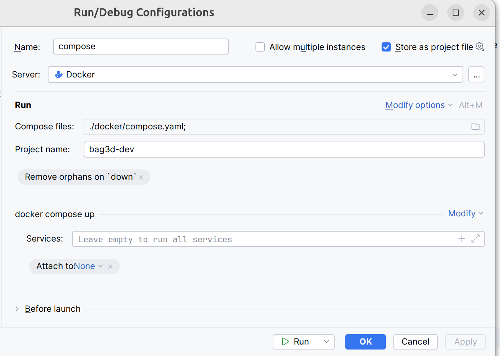
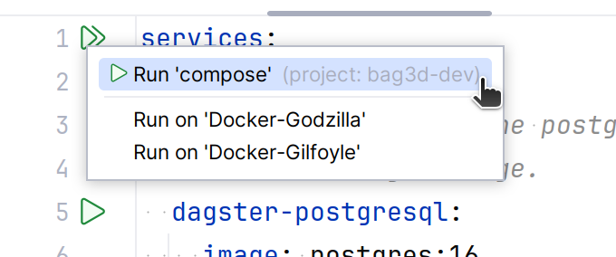
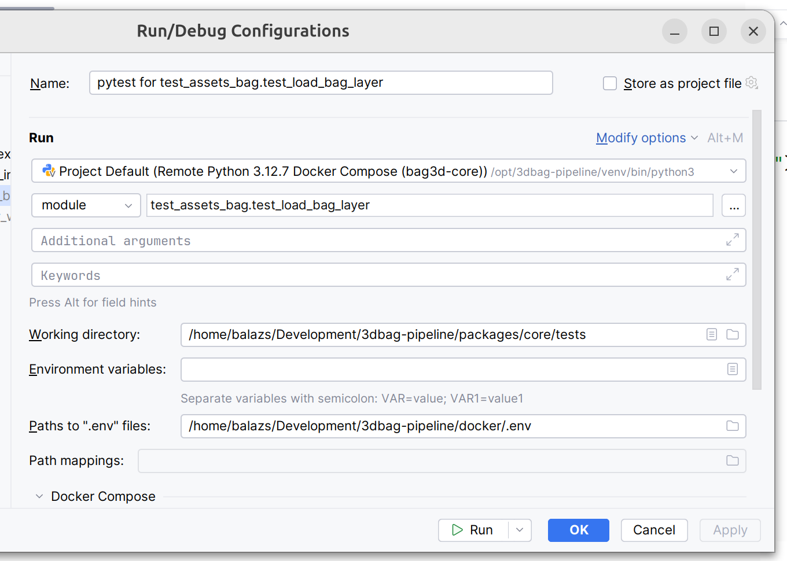

Code¶
Thank you for considering contributing to the 3DBAG pipeline. In this document, we will guide you through setting up your local development environment and running the tests. For information on how to submit a contribution, please refer to our guidelines.
Setup¶
After cloning the repository from https://github.com/3DBAG/3dbag-pipeline, the recommended way to set up your environment is with Docker.
Requirements:
-
Python >=3.11
-
make
-
Docker Engine
-
Docker Compose (>= 2.22.0)
We use make for managing many commands that we use in development.
Test data & Docker Volumes¶
The Makefile uses two different .env files for controlling the local environment and the environment in the Docker containers.
The .env file in the root directory is used for the local environment and the docker/.env file is used for the Docker environment.
The values in the root .env file are specific to your local environment and you need to set them up yourself.
echo "BAG3D_TEST_DATA=${PWD}/tests/test_data" > .env
Download test data:
make download
Create the docker volumes that store the test data:
make docker_volume_create
In addition, make docker_volume_rm removes the volumes, make docker_volume_recreate recreates the volumes.
Note that if you change the test data locally and you want the docker services to use the updated data, you need to:
-
stop the services:
make docker_down -
recreate the volumes in order to copy the new data into them:
make docker_volume_recreate -
start the service again:
make docker_up
Docker containers¶
Start the docker containers with watch enabled with the following command:
make docker_watch
The watch attribute allows you to synchronize changes in the code with your containers. When you issue this command for the first time, several things happen:
-
The required base images are pulled from DockerHub.
-
The 3dbag-pipeline workflow images are built from the local source code.
-
The containers are connected to the volumes and networks.
-
The dagster-webserver is published on
localhost:3003. -
Docker compose starts watching for changes in the source code on the host machine.
The running containers contain all the tools required for a complete run of the 3dbag-pipeline. This means that you can develop and test any part of the code locally.
If you make a change in the source code in your code editor, the files are automatically synced into the running containers. You can see your changes in effect after reloading the code location, job, asset or resource in the Dagster UI on localhost:3003.
The docker documentation describes in detail how the compose watch functionality works.
If you don't want to enable the code synchronization, you can use make docker_up command, which starts the containers without without the watch attribute.
The docker_watch and docker_up targets will set the docker compose project name to bag3d-dev.
Docker setup in PyCharm (professional)¶
Create run configuration that uses the docker compose file. For example, see the screenshot below. 
Start the services by running the configuration from the compose file. For example, see the screenshot below. 
Set up the python interpreter in the docker container as the project interpreter, using PyCharm's docker-compose interpreter setup.
Note here that you need to use the matching service for the 3dbag-pipeline package.
For example, for working on the core package, you need to configure the bag3d-core service for the python interpreter.
To run a specific test, set up a run configuration with the python interpreter in docker and make sure to use the environment variables from the docker/.env file.

For further details, see the PyCharm documentation.
Code formatting¶
In you have a local installation of uv, you can format you code with:
make format
Tests¶
Tests are run separately for each package and they are located in the tests directory of the package.
Tests use pytest.
Some tests take a long time to execute. These are marked with the @pytest.mark.slow decorator and they will be skipped by default. In order to include the slow tests in the test execution, use the --run-slow command line option.
The tests use the sample data that are downloaded as shown above.
You can run the fast unit test for all packages with:
make test
For running also the slow tests (which require more time) you can run:
```shell make test_slow
For running the integration tests you can use:
```shell
make test_integration
For running all tests, you can run:
make test_all
Installing requirements without the Docker setup¶
The pipeline has the following requirements:
-
Python 3.11
-
Docker
The build-tools.sh Bash script can help you to build the required tools.
See build-tools.sh --help for usage instructions.
Note that you need to run build-tools.sh with bash (not sh), and it can take a
couple of hours to build everything.
Requirements for building the tools:
- C and C++ compilers (min. GCC 13 or Clang 18)
- CMake
- Rust toolchain
- Git
- wget
- libgeos
- sqlite3
- libtiff
Branches¶
The master branch contains stable versions of the 3dbag-pipeline.
We use the master branch to produce a 3DBAG version.
After a new 3DBAG is successfully produced, we tag and release the master branch, using the version number of the new 3DBAG, in the form of <year>.<month>.<day>, for example 2024.10.24.
We use production candidate tags in the form of <year>.<month>-pc<build>, for example 2024.10-pc0.
Production candidates are versions on the develop branch that are deployed to our production server and tested with a full pipeline run, but with a subset of the input.
If a production candidate is successful then it will be used for producing the final 3DBAG.
Moving the code onto a production branch helps the collaboration with external contributors.
When we move a version onto production, we freeze that version and won't add any new features, only fixes that are required in the production test.
At the same time, work can continue on the develop branch, pull requests can be opened and merged.
The develop branch is a trunk where the pull requests from the contributors are merged.
When a pull request is opened, the following checks are performed in GitHub Actions:
- static code analysis,
- formatting conformance,
- unit testing,
- integration testing.
Each check must pass for the pull request in order to be approved.
When a pull request is merged into the develop branch, the following actions are performed in GitHub Actions:
- documentation is built,
- the docker images are built and published on DockerHub with the develop tag,
- the develop docker images are deployed onto our production server.
Coding Conventions¶
SQL files are stored in the sqlfiles subpackage, so that the bag3d.common.utils.database.load_sql function can load them.
The dependency graph of the 3D BAG packages is strictly common<--workflow packages, thus workflow packages cannot depend on each other.
If you find that you need to depend on functionality in another workflow package, move that function to common.
Docstrings follow the Google style.
However, dagster is too smart for it's own good and if you describe the return value with the Returns: section, then dagster will only display the text of the Returns: section in the dagster UI.
A workaround for this is to include the Returns: heading in the return value description.
For example Returns a collection type, storing the...
Assets are usually some results of computations, therefore their names are nouns, not verbs.
Release process¶
Release always happens from the master branch, after merging the successful production candidate branch into master.
See the branches section for more information.
- Update the CHANGELOG.md file with the new version and the changes. It must include the new version number that you are releasing, e.g.
## [2024.10.24]. - On GitHub, create a new pull request from the current production candidate branch to the
masterbranch and merge it. - Manually trigger the release workflow on GitHub Actions. You'll need to input the new version number that you added to the CHANGELOG, e.g.
2024.10.24. This will create a new release on GitHub and add the contents of the CHANGELOG to the release notes. - The workflow will automatically open a pull request from
mastertodevelopto merge back the changes from the release. This is done to keep thedevelopbranch up to date with the latest changes from themasterbranch. You can merge this pull request after the release is done.
Dagster¶
Terminate all in the queue¶
Needs to be executed in the environment where the Dagster UI and the Dagster-daemon are running.
This is currently /opt/dagster/venv on gilfoyle.
On gilfoyle, need to source all the environment variables first (/opt/dagster/dagster_home/.env).
On gilfyole:
su dagster
export DAGSTER_HOME=/opt/dagster/dagster_home
source DAGSTER_HOME=/opt/dagster/dagster_home/.env
source /opt/dagster/venv/bin/activate
from dagster import DagsterInstance, RunsFilter, DagsterRunStatus
instance = DagsterInstance.get() # needs your DAGSTER_HOME to be set, DAGSTER_HOME=/opt/dagster/dagster_home on gilfoyle
while True:
queued_runs = instance.get_runs(limit=100, filters=RunsFilter(statuses=[DagsterRunStatus.QUEUED]))
if not queued_runs:
break
for run in queued_runs:
instance.report_run_canceled(run)
Schedules and sensors¶
If you want to enable Dagster Schedules or Sensors for your jobs, start the Dagster Daemon process in the same folder as your workspace.yaml file, but in a different shell or terminal.
The $DAGSTER_HOME environment variable must be set to a directory for the daemon to work. Note: using directories within /tmp may cause issues. See Dagster Instance default local behavior for more details.
In this repository the $DAGSTER_HOME is in tests/dagster_home.
export DAGSTER_HOME=<absolute path to tests/dagster_home>
dagster-daemon run
Once your Dagster Daemon is running, you can start turning on schedules and sensors for your jobs.
GraphQL API¶
Dagster has a GraphQL API and it is served alongside the dagster-webserver at /graphql (eg http://localhost:3000/graphql).
One can do basically everything that is doable in the Dagster UI.
Retrieve data on assets, runs etc., but also launch runs.
This query to get the asset materializations metadata and asset dependencies (lineage):
{
assetNodes(
group: {
groupName: "top10nl"
repositoryName: "__repository__"
repositoryLocationName: "core_py_311_virtual_env"
}
pipeline: {
pipelineName: "source_input"
repositoryName: "__repository__"
repositoryLocationName: "core_py_311_virtual_env"
}
# assetKeys: { path: ["top10nl", "stage_top10nl_gebouw"] }
loadMaterializations: true
) {
assetKey {
path
}
dependencies {
asset {
assetKey{path}
}
}
assetMaterializations(limit: 1) {
runId
assetLineage {
assetKey {
path
}
partitions
}
metadataEntries {
label
description
__typename
... on TextMetadataEntry {
text
}
__typename
... on IntMetadataEntry {
intValue
}
}
}
}
}